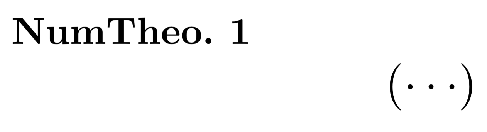
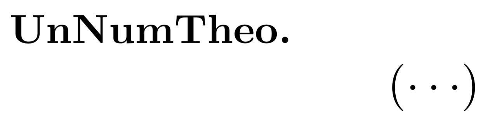
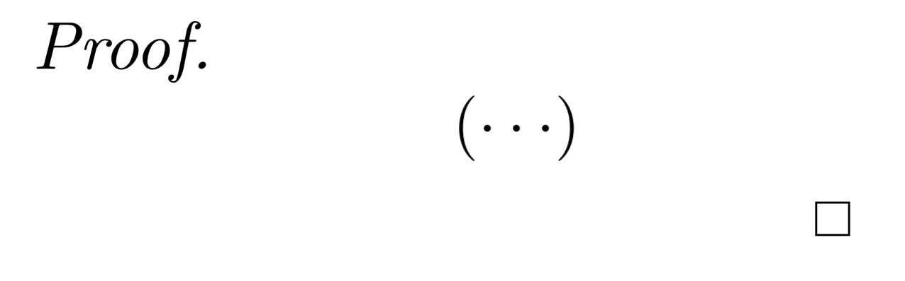

Writing Notes
If you want to produce a clean and tidy text from a mathematical point of view, you need to know
how to use LaTeX in the most appropriate way. On this page you will discover how to organize your text by dividing
it, if necessary, into the following categories:
Numbered Environment
The numbered environments in LaTeX can be defined by the command
\newtheorem{myTheo}{NumTheo}.
As you can see this command has two parameters: myTheo is the name you will use to reference this environment,
while NumTheo is the character that will be printed in bold at the beginning of the environment. Once defined
in the header of the LaTeX document, this type of environment can be used in the text delimited by the marks
\begin{myTheo} and \end{myTheo}.
CODE
\documentclass{article}
\usepackage{amsthm}
\newtheorem{myTheo}{NumTheo.}
\begin{document}
\begin{myTheo}
$$\left(\cdots\right)$$
\end{myTheo}
\end{document}

Unnumered Environment
In case we want an unnumbered environment, the syntax is very similar to that of the numbered list. The
only difference is in the asterisk
* inserted before the two parameters in the header of the document.
What results will be \newtheorem*{myUnnumTheo}{UnNumTheo}. Otherwise it is used in the same way as the
numbered one.CODE
\documentclass{article}
\usepackage{amsthm}
\newtheorem*{myUnnumTheo}{UnNumTheo}
\begin{document}
\begin{myUnnumTheo}
$$\left(\cdots\right)$$
\end{myUnnumTheo}
\end{document}

Counters
By default, each
\newtheorem{myTheo}{NumTheo} has its counter. However, it is possible to customize
the counters.If I want the counter of something to be updated to the section change, I have to write
\newtheorem{myTheo}{NumTheo}[section]. Instead of section I also can write others
sectioning names.If I have to use a common counter for similar types of theorems I write
\newtheorem{lemma}[myTheo]{Lemma},
where in the square brackets I'm telling LaTeX to use the same counter as myTheo.Another customization of the counter is that the counter of an environment
corollary will be reset
each time myTheo is used. To do this we write \newtheorem{corollary}{Corollary}[myTheo].CODE
\documentclass{article}
\usepackage{amsthm}
\newtheorem{myTheo}{NumTheoSection}[section]
\newtheorem{lemma}[myTheo]{Lemma}
\newtheorem{corollary}{Corollary}[myTheo]
\begin{document}
\section{First Section}
\begin{myTheo}
$$\left(\cdots\right)$$
\end{myTheo}
\begin{corollary}
$$\left(\cdots\right)$$
\end{corollary}
\begin{lemma}
$$\left(\cdots\right)$$
\end{lemma}
\begin{myTheo}
$$\left(\cdots\right)$$
\end{myTheo}
\begin{corollary}
$$\left(\cdots\right)$$
\end{corollary}
\section{Second Section}
\begin{lemma}
$$\left(\cdots\right)$$
\end{lemma}
\begin{corollary}
$$\left(\cdots\right)$$
\end{corollary}
\begin{myTheo}
$$\left(\cdots\right)$$
\end{myTheo}
\begin{lemma}
$$\left(\cdots\right)$$
\end{lemma}
\begin{corollary}
$$\left(\cdots\right)$$
\end{corollary}
\end{document}
Proof
When we want to prove something we don't have to use the mark
\newtheorem as above. LaTeX provides proofs by
using the commands \begin{proof} and \end{proof}. Writing the proof inside them will make a small square appear at
the end of the proof, which in mathematical language means proven.CODE
\documentclass{article}
\usepackage{amsthm}
\begin{document}
\begin{proof}
$$\left(\cdots\right)$$
\end{proof}
\end{document}

Exercices
1) Write a numbered and a unnumbered environment. The string that will be printed in bold at the beginning of both the environments must be the same, that is, LEMMA.
\documentclass{article}
\usepackage{amsthm}
\newtheorem*{myUnnumTheo}{LEMMA}
\newtheorem{myNumTheo}{LEMMA}
\begin{document}
\begin{myNumTheo}
Content of the numbered environment
\end{myNumTheo}
\begin{myUnnumTheo}
Content of the unnumbered environment
\end{myUnnumTheo}
\end{document}
2) What should be added in the file header of the first exercise to have an environment whose counter follows that of the numbered LEMMA?
After defining it in the header, use it in the document.
Header:
Document:
\newtheorem{alfa}[myNumTheo]{ALFA}Document:
\begin{alfa}
I'm following the myNumTheo counter
\end{alfa}